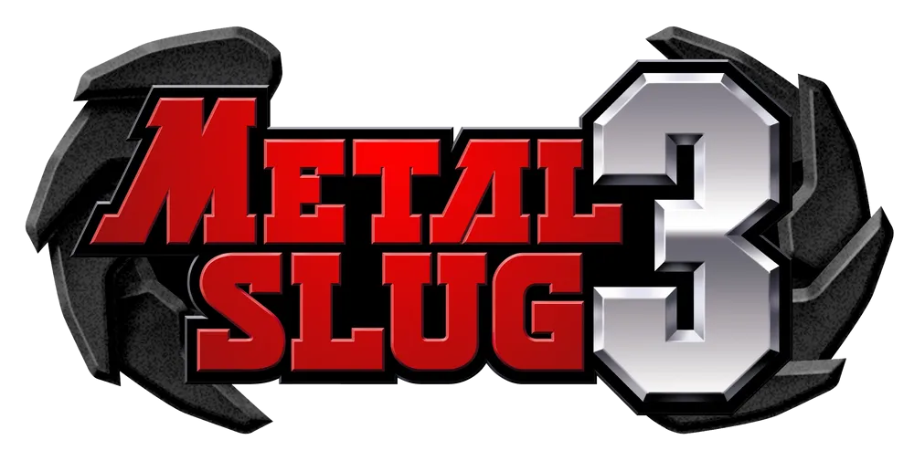

키보드 조작이 필요한 게임입니다. Windows·macOS·Linux PC에서 참여할 수 있습니다.
회원식별 후 다시 입장하기 →
방을 만들거나 대기 중인 방에 입장하세요. 혼자서도 시작할 수 있습니다.
WASD 이동J 공격 · K 점프 · U 폭탄
회원 확인 후 방 목록을 불러옵니다.
설치를 누르면 게임을 내려받아 이 PC의 브라우저에 저장합니다.

다른 게임은 추후 추가됩니다.
WASD 이동 · J 공격/시작/컨티뉴 · K 점프 · U 폭탄 · Enter 채팅
현재 일반 회원에게는 공개되지 않은 테스트입니다.전달받은 테스트 비밀번호를 입력해주세요.
약 34MB의 게임 데이터를 서버에서 내려받아 이 PC의 브라우저에 설치합니다. 원본 ZIP을 선택할 필요가 없으며 다음부터는 자동으로 준비됩니다.
회원식별과 테스트 비밀번호 확인 후 설치할 수 있습니다. 브라우저 데이터를 삭제하거나 다른 PC를 사용하면 다시 설치해주세요.